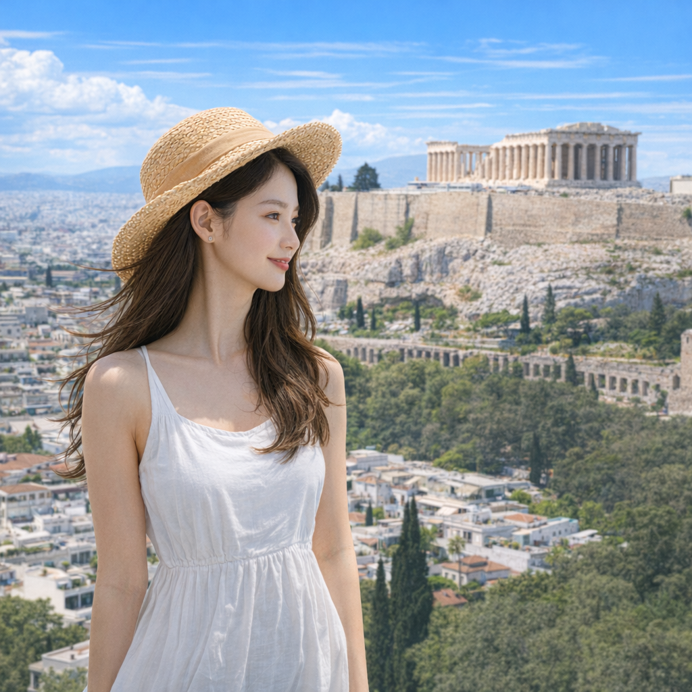

Parthenon, Athens
The stone beneath her feet feels older than memory, but it is not the age of the marble that occupies Dorami’s mind—it is the quiet in between. She turns her face just slightly toward the left edge of the frame, as if listening for a city-sound that belongs only to her: a child's laughter, a bell somewhere down the slope, the distant pulse of cars that map the modern life below the Acropolis. In that small angle, the present stretches. Today is not a scene to be captured for others; it is a moment she keeps. She thinks about who she was on the ferry—lighter, open to wherever the sea might take her—and who she is now: someone carrying memory like a small, warm stone in her palm. The Parthenon stands impartial, patient. Dorami lets that steadiness sit beside her uncertainty; she breathes, and for a second the past and present hold hands.